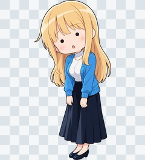
思考停止SD / 表情04頭身・手足も簡略化した反応カット。厳密な3頭身統一や完全なフラット塗りには未達。
素材を開く困惑して叫ぶ通常表情 / 表情04ユーザーが通常頭身で良いと評価。照れ・困惑の候補。
素材を開く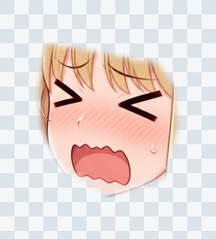
困惑して叫ぶ・顔パーツ顔パーツ / 表情04元の胸に手を添えた姿勢・同一角度専用。別姿勢の顔へ自動適合しない。
素材を開く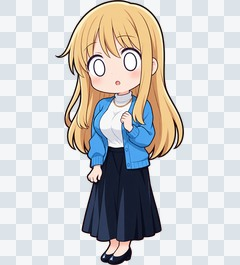
呆然SD / 表情04頭身・手足も簡略化した反応カット。厳密な3頭身統一や完全なフラット塗りには未達。
素材を開く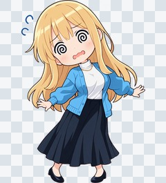
大混乱SD / 表情04頭身・手足も簡略化した反応カット。厳密な3頭身統一や完全なフラット塗りには未達。
素材を開く虚無通常表情 / 表情04ハイライト消失を確認。SD版26も追加。
素材を開く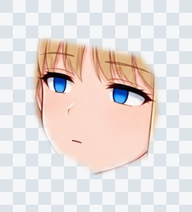
虚無・顔パーツ顔パーツ / 表情04元の胸に手を添えた姿勢・同一角度専用。別姿勢の顔へ自動適合しない。
素材を開く呆れ通常表情 / 表情04表情の違いを目視確認。場面での最終採否は未決定。
素材を開く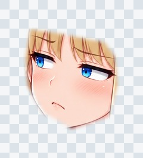
呆れ・顔パーツ顔パーツ / 表情04元の胸に手を添えた姿勢・同一角度専用。別姿勢の顔へ自動適合しない。
素材を開くふてくされ通常表情 / 表情04頬のふくらみは輪郭全体を変えるため、部分合成では弱まる。頬ぷく口の候補。
素材を開くふてくされ・顔パーツ顔パーツ / 表情04元の胸に手を添えた姿勢・同一角度専用。別姿勢の顔へ自動適合しない。
素材を開くショック通常表情 / 表情04表情の違いを目視確認。場面での最終採否は未決定。
素材を開く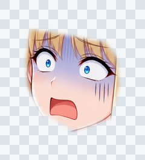
ショック・顔パーツ顔パーツ / 表情04元の胸に手を添えた姿勢・同一角度専用。別姿勢の顔へ自動適合しない。
素材を開く恋の予感通常表情 / 表情04控えめな恋心。16との差は弱め。
素材を開く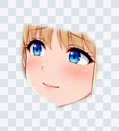
恋の予感・顔パーツ顔パーツ / 表情04元の胸に手を添えた姿勢・同一角度専用。別姿勢の顔へ自動適合しない。
素材を開く憧れ通常表情 / 表情04表情の違いを目視確認。場面での最終採否は未決定。
素材を開く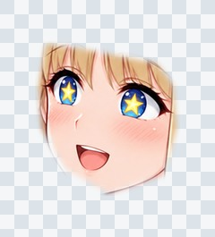
憧れ・顔パーツ顔パーツ / 表情04元の胸に手を添えた姿勢・同一角度専用。別姿勢の顔へ自動適合しない。
素材を開く恋に夢中通常表情 / 表情04表情の違いを目視確認。場面での最終採否は未決定。
素材を開く恋に夢中・顔パーツ顔パーツ / 表情04元の胸に手を添えた姿勢・同一角度専用。別姿勢の顔へ自動適合しない。
素材を開く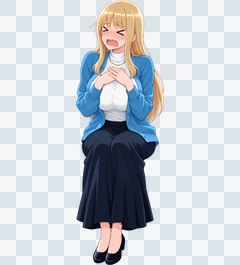
照れ悶絶通常表情 / 表情04表情の違いを目視確認。場面での最終採否は未決定。
素材を開く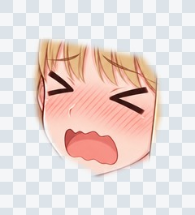
照れ悶絶・顔パーツ顔パーツ / 表情04元の胸に手を添えた姿勢・同一角度専用。別姿勢の顔へ自動適合しない。
素材を開く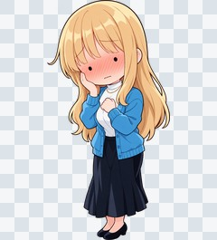
恥ずかしさの限界SD / 表情04頭身・手足も簡略化した反応カット。厳密な3頭身統一や完全なフラット塗りには未達。
素材を開く感動通常表情 / 表情04表情の違いを目視確認。場面での最終採否は未決定。
素材を開く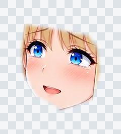
感動・顔パーツ顔パーツ / 表情04元の胸に手を添えた姿勢・同一角度専用。別姿勢の顔へ自動適合しない。
素材を開く嫉妬通常表情 / 表情04表情の違いを目視確認。場面での最終採否は未決定。
素材を開く嫉妬・顔パーツ顔パーツ / 表情04元の胸に手を添えた姿勢・同一角度専用。別姿勢の顔へ自動適合しない。
素材を開く恋の妄想通常表情 / 表情04妄想の誇張は弱く、普通の微笑みに近い。要改善。
素材を開く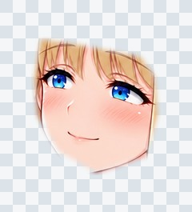
恋の妄想・顔パーツ顔パーツ / 表情04元の胸に手を添えた姿勢・同一角度専用。別姿勢の顔へ自動適合しない。
素材を開く泣き出しそう通常表情 / 表情04表情の違いを目視確認。場面での最終採否は未決定。
素材を開く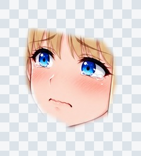
泣き出しそう・顔パーツ顔パーツ / 表情04元の胸に手を添えた姿勢・同一角度専用。別姿勢の顔へ自動適合しない。
素材を開く大泣き通常表情 / 表情04涙の端・顔境界は仕上げ確認が必要。
素材を開く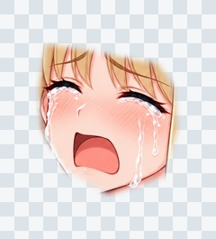
大泣き・顔パーツ顔パーツ / 表情04元の胸に手を添えた姿勢・同一角度専用。別姿勢の顔へ自動適合しない。
素材を開く泣き笑い通常表情 / 表情04表情の違いを目視確認。場面での最終採否は未決定。
素材を開く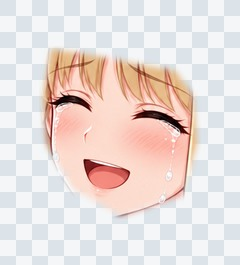
泣き笑い・顔パーツ顔パーツ / 表情04元の胸に手を添えた姿勢・同一角度専用。別姿勢の顔へ自動適合しない。
素材を開く本気の怒り通常表情 / 表情04表情の違いを目視確認。場面での最終採否は未決定。
素材を開く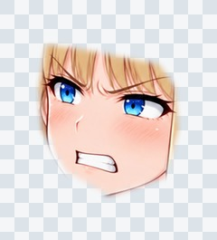
本気の怒り・顔パーツ顔パーツ / 表情04元の胸に手を添えた姿勢・同一角度専用。別姿勢の顔へ自動適合しない。
素材を開く怒りながら照れる通常表情 / 表情04怒り眉・強い赤面・抗議する口。
素材を開く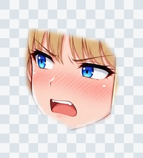
怒りながら照れる・顔パーツ顔パーツ / 表情04元の胸に手を添えた姿勢・同一角度専用。別姿勢の顔へ自動適合しない。
素材を開く怯える通常表情 / 表情04表情の違いを目視確認。場面での最終採否は未決定。
素材を開く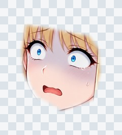
怯える・顔パーツ顔パーツ / 表情04元の胸に手を添えた姿勢・同一角度専用。別姿勢の顔へ自動適合しない。
素材を開く意地悪な笑顔通常表情 / 表情04表情の違いを目視確認。場面での最終採否は未決定。
素材を開く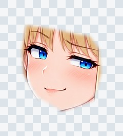
意地悪な笑顔・顔パーツ顔パーツ / 表情04元の胸に手を添えた姿勢・同一角度専用。別姿勢の顔へ自動適合しない。
素材を開く強がり通常表情 / 表情04表情の違いを目視確認。場面での最終採否は未決定。
素材を開く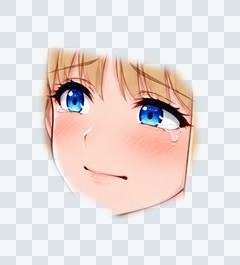
強がり・顔パーツ顔パーツ / 表情04元の胸に手を添えた姿勢・同一角度専用。別姿勢の顔へ自動適合しない。
素材を開く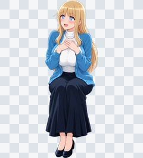
しいたけ目・期待通常表情 / 表情04表情の違いを目視確認。場面での最終採否は未決定。
素材を開く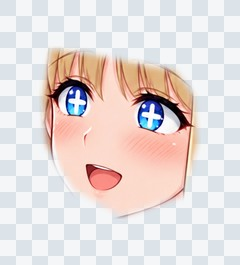
しいたけ目・期待・顔パーツ顔パーツ / 表情04元の胸に手を添えた姿勢・同一角度専用。別姿勢の顔へ自動適合しない。
素材を開く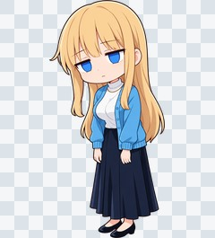
虚無・大きめの目（SD）SD / 表情04頭身・手足も簡略化した反応カット。厳密な3頭身統一や完全なフラット塗りには未達。
素材を開く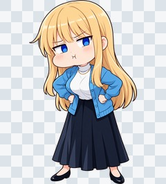
頬ぷくSD / 感情・効果05全身SD候補。頭身・衣装細部の厳密な共通化と指先の最終検収は未完了。
素材を開くふてくされSD / 感情・効果05全身SD候補。頭身・衣装細部の厳密な共通化と指先の最終検収は未完了。
素材を開くジト目SD / 感情・効果05全身SD候補。頭身・衣装細部の厳密な共通化と指先の最終検収は未完了。
素材を開くガーンSD / 感情・効果05全身SD候補。頭身・衣装細部の厳密な共通化と指先の最終検収は未完了。
素材を開く星目SD / 感情・効果05全身SD候補。頭身・衣装細部の厳密な共通化と指先の最終検収は未完了。
素材を開くハート目SD / 感情・効果05全身SD候補。頭身・衣装細部の厳密な共通化と指先の最終検収は未完了。
素材を開く嫉妬SD / 感情・効果05全身SD候補。頭身・衣装細部の厳密な共通化と指先の最終検収は未完了。
素材を開く泣き出しそうSD / 感情・効果05全身SD候補。頭身・衣装細部の厳密な共通化と指先の最終検収は未完了。
素材を開く大泣きSD / 感情・効果05全身SD候補。頭身・衣装細部の厳密な共通化と指先の最終検収は未完了。
素材を開く怒りSD / 感情・効果05全身SD候補。頭身・衣装細部の厳密な共通化と指先の最終検収は未完了。
素材を開く期待と不安通常表情 / 感情・効果05共通の服・姿勢を保った顔差分。
素材を開く運動後くたくた通常表情 / 感情・効果05運動後の顔候補。姿勢・服は共通で、全身の疲労やスポーツウェアの制作ではない。髪に描かれた汗1滴は顔外保護により採用しない。
素材を開く眠気でぼんやり通常表情 / 感情・効果05眠気でぼんやり。意識障害そのものの再現ではない。口は指定した閉じ口より少し開いた。
素材を開くハート噴き出しエフェクト / 感情・効果05一枚のまとまったハートエフェクト。発光は強めで、指定12粒に対し大きいハートは目視10粒。
素材を開く震え・振動線エフェクト / 感情・効果05生成アルファを保全した独立素材。
素材を開く無人の家具・振動確認用小道具 / 感情・効果05振動テスト用の汎用無人家具。既存の寝室背景のベッドを切り出したものではない。
素材を開くハート粒子・単体エフェクト / 感情・効果05生成アルファを保全した独立素材。
素材を開く甘えて抱きつく接触ポーズ / 接触06男性の余分な手を修正した候補。 視線は07の監査を参照。ペアを一人ずつの画像として扱わない。
素材を開く抱きついて離れたくない接触ポーズ / 接触06男性の余分な手を修正した候補。 視線は07の監査を参照。ペアを一人ずつの画像として扱わない。
素材を開く身を寄せる接触ポーズ / 接触06姿勢候補。衣装細部・体格・接触の最終検収は未完了。 視線は07の監査を参照。ペアを一人ずつの画像として扱わない。
素材を開く身を寄せ合う接触ポーズ / 接触06姿勢候補。衣装細部・体格・接触の最終検収は未完了。 視線は07の監査を参照。ペアを一人ずつの画像として扱わない。
素材を開く手をつなぐ接触ポーズ / 接触06指先・握り方は拡大して製品検収が必要。 視線は07の監査を参照。ペアを一人ずつの画像として扱わない。
素材を開く見つめ合う接触ポーズ / 接触06姿勢候補。衣装細部・体格・接触の最終検収は未完了。 視線は07の監査を参照。ペアを一人ずつの画像として扱わない。
素材を開く身を寄せる・女性単独接触ポーズ / 接触06姿勢候補。衣装細部・体格・接触の最終検収は未完了。 視線は07の監査を参照。ペアを一人ずつの画像として扱わない。
素材を開く抱きついた相手の顔を見上げたい視線 / 視線07男性の目元は隠れる。相互視線は未確認。
素材を開くつないだ手が気になり、照れて顔を見られない視線 / 視線07男性の目元は隠れる。相互視線は未確認。
素材を開くheroine_cover_mouth仕草 / 仕草03仕草と表情の組。男性・仮の別女性を含む。
素材を開くheroine_cup_cheeks仕草 / 仕草03仕草と表情の組。男性・仮の別女性を含む。
素材を開くheroine_heart_flutter仕草 / 仕草03仕草と表情の組。男性・仮の別女性を含む。
素材を開くheroine_jealous_observer仕草 / 仕草03仕草と表情の組。男性・仮の別女性を含む。
素材を開くguest_woman_kiss仕草 / 仕草03仕草と表情の組。男性・仮の別女性を含む。
素材を開くmob_b_teasing仕草 / 仕草03仕草と表情の組。男性・仮の別女性を含む。
素材を開くむわ～・手描き縦型描き文字 / 今回08独立レイヤーの候補。元アルファを保全。
素材を開くどきっ・手描き縦型描き文字 / 今回08独立レイヤーの候補。元アルファを保全。
素材を開く人いきれ・ほぼ透明の膜エフェクト / 今回08独立レイヤーの候補。元アルファを保全。
素材を開く小刻みな震え・短い線エフェクト / 今回08独立レイヤーの候補。元アルファを保全。
素材を開くぎゅー描き文字 / 今回08独立レイヤーの候補。元アルファを保全。
素材を開くどきどき・旧版描き文字 / 今回08旧版の比較用。現在の推奨は15のピンク・小さめ・震え・重なる連続表示。 独立レイヤーの候補。元アルファを保全。
素材を開くきゅん描き文字 / 今回08独立レイヤーの候補。元アルファを保全。
素材を開くもじ…描き文字 / 今回08独立レイヤーの候補。元アルファを保全。
素材を開くそわ…描き文字 / 今回08独立レイヤーの候補。元アルファを保全。
素材を開くちゅっちゅ描き文字 / 今回08独立レイヤーの候補。元アルファを保全。
素材を開く甘えるアヒル口通常表情 / 今回08小さなアヒル口の候補。拗ね顔にも読める。左上の会話相手を見る意図。別角度へそのまま貼らない。
素材を開く甘えるアヒル口・顔パーツ顔パーツ / 今回08小さなアヒル口の候補。拗ね顔にも読める。左上の会話相手を見る意図。別角度へそのまま貼らない。
素材を開く連続ハート流出・apngアニメーション / 今回08濃いピンク。真上へ約106〜141pxの短い上昇。出現間隔・位置・サイズにばらつき、同時最大4粒。始終フェード、3.84秒。GIFは透過ディザ近似、APNG/WebPは半透明。
素材を開く連続ハート流出・webpアニメーション / 今回08濃いピンク。真上へ約106〜141pxの短い上昇。出現間隔・位置・サイズにばらつき、同時最大4粒。始終フェード、3.84秒。GIFは透過ディザ近似、APNG/WebPは半透明。
素材を開く連続ハート流出・gifアニメーション / 今回08濃いピンク。真上へ約106〜141pxの短い上昇。出現間隔・位置・サイズにばらつき、同時最大4粒。始終フェード、3.84秒。GIFは透過ディザ近似、APNG/WebPは半透明。
素材を開くむわぁ…描き文字 / 質感09蒸れた空気がこもる。内蔵生成の独立PNG。元アルファを保全。
素材を開くぎゅう♡描き文字 / 質感09やさしくハグする。内蔵生成の独立PNG。元アルファを保全。
素材を開くむにゅ♡描き文字 / 質感09柔らかいクッションを軽く押す。内蔵生成の独立PNG。元アルファを保全。
素材を開くぽふっ♡描き文字 / 質感09枕に軽く触れる。内蔵生成の独立PNG。元アルファを保全。
素材を開くふわっ♡描き文字 / 質感09柔らかい毛布の肌触り。内蔵生成の独立PNG。元アルファを保全。淡色で細いため縮小時の読みやすさは要調整。
素材を開くぴちゃぴちゃ描き文字 / 質感09水滴が水面に落ちる。内蔵生成の独立PNG。元アルファを保全。
素材を開くもみもみ♡描き文字 / 質感09肩をやさしくマッサージする。内蔵生成の独立PNG。元アルファを保全。
素材を開くはぁ…描き文字 / 質感09安堵、または運動後に息を整える。内蔵生成の独立PNG。元アルファを保全。
素材を開くじゅぽじゅぽ描き文字 / 先行色09先行色の保管。最新候補は10のピンク＋輪郭ハート版。
素材を開くしこっ しこっ描き文字 / 先行色09先行色の保管。最新候補は10のピンク＋輪郭ハート版。
素材を開く手描きの輪郭ハートエフェクト / 質感09独立した小さな好意の記号。内蔵生成の独立PNG。元アルファを保全。参照より線が太めの候補。中央は透過。
素材を開くぶるんぶるん・ピンクと振動線描き文字 / 質感09ぶどうの房の弾力。色変更と周囲の小刻みな振動。内蔵生成の独立PNG。元アルファを保全。紫版からの色・振動線の編集。字形の完全な画素一致は保証しない。
素材を開くびくっ びくっ描き文字 / 先行版09茶色・先行版を保管。最新版は13のピンク・時間差フェード・緩やかな震え。
素材を開くたぽんっ♡描き文字 / 質感09容器内の液体が揺れる音。内蔵生成の独立PNG。元アルファを保全。
素材を開くぱたんっ描き文字 / 質感09軽い物をひっくり返して倒す音。内蔵生成の独立PNG。元アルファを保全。
素材を開くばしゃっ描き文字 / 質感09容器を倒して水がこぼれる音。内蔵生成の独立PNG。元アルファを保全。
素材を開くフッ描き文字 / 持ち込み持ち込み済み素材。今回の新規生成数に含めない。元ファイルを変更せず再利用。
素材を開くフーッ描き文字 / 持ち込み持ち込み済み素材。今回の新規生成数に含めない。元ファイルを変更せず再利用。
素材を開くぬちゅっ描き文字 / 持ち込み持ち込み済み素材。今回の新規生成数に含めない。元ファイルを変更せず再利用。
素材を開くイ゛グっ描き文字 / 持ち込み持ち込み済み素材。今回の新規生成数に含めない。元ファイルを変更せず再利用。
素材を開くあっ描き文字 / 持ち込み持ち込み済み素材。今回の新規生成数に含めない。元ファイルを変更せず再利用。
素材を開くさわっ描き文字 / 持ち込み持ち込み済み素材。今回の新規生成数に含めない。元ファイルを変更せず再利用。
素材を開くムチッ描き文字 / 持ち込み持ち込み済み素材。今回の新規生成数に含めない。元ファイルを変更せず再利用。
素材を開くはぁ…・APNGアニメーション / 動く文字・ハート09float＋フェードイン／アウト。3.0秒。半透明。同じコマは時間を合算。
素材を開くはぁ…・WEBPアニメーション / 動く文字・ハート09float＋フェードイン／アウト。3.0秒。半透明。同じコマは時間を合算。
素材を開くぶるんぶるん・ピンクと振動線・APNGアニメーション / 動く文字・ハート09squash＋フェードイン／アウト。2.4秒。半透明。同じコマは時間を合算。
素材を開くぶるんぶるん・ピンクと振動線・WEBPアニメーション / 動く文字・ハート09squash＋フェードイン／アウト。2.4秒。半透明。同じコマは時間を合算。
素材を開くびくっ びくっ・APNGアニメーション / 先行版09茶色・先行版を保管。最新版は13のピンク・時間差フェード・緩やかな震え。
素材を開くびくっ びくっ・WEBPアニメーション / 先行版09茶色・先行版を保管。最新版は13のピンク・時間差フェード・緩やかな震え。
素材を開くどきどき・APNG・旧版アニメーション / 動く文字・ハート09旧版の比較用。現在の推奨は15のピンク・小さめ・震え・重なる連続表示。 pulse＋フェードイン／アウト。2.4秒。半透明。同じコマは時間を合算。
素材を開くどきどき・WEBP・旧版アニメーション / 動く文字・ハート09旧版の比較用。現在の推奨は15のピンク・小さめ・震え・重なる連続表示。 pulse＋フェードイン／アウト。2.4秒。半透明。同じコマは時間を合算。
素材を開く輪郭ハートの流出・APNGアニメーション / 動く文字・ハート09下左から上右へ連続放出し、先で消える。3.84秒。半透明。同じコマは時間を合算。
素材を開く輪郭ハートの流出・WEBPアニメーション / 動く文字・ハート09下左から上右へ連続放出し、先で消える。3.84秒。半透明。同じコマは時間を合算。
素材を開くじゅぽじゅぽ・ピンクとハート描き文字 / 色変更10ピンク＋周囲に小さな輪郭ハート3点。細い白縁を残した内蔵編集候補。元の字形の完全な画素一致は未保証。
素材を開くしこっ しこっ・ピンクとハート描き文字 / 色変更10ピンク＋周囲に小さな輪郭ハート3点。細い白縁を残した内蔵編集候補。元の字形の完全な画素一致は未保証。
素材を開くシュッ描き文字 / 持ち込み追加フォルダーへ追加済みの素材を読み取り再利用。今回の新規生成に数えず、元PNGを変更していない。
素材を開くパンッ描き文字 / 持ち込み追加フォルダーへ追加済みの素材を読み取り再利用。今回の新規生成に数えず、元PNGを変更していない。
素材を開くどびゅるるっ描き文字 / 持ち込み追加フォルダーへ追加済みの素材を読み取り再利用。今回の新規生成に数えず、元PNGを変更していない。
素材を開くどぴゅっ描き文字 / 持ち込み追加フォルダーへ追加済みの素材を読み取り再利用。今回の新規生成に数えず、元PNGを変更していない。
素材を開くビクンッ描き文字 / 持ち込み追加フォルダーへ追加済みの素材を読み取り再利用。今回の新規生成に数えず、元PNGを変更していない。
素材を開くぐにいっ・先行白版描き文字 / 持ち込み追加フォルダーへ追加済みの素材を読み取り再利用。今回の新規生成に数えず、元PNGを変更していない。
素材を開くぐにいっ・ピンク描き文字 / 持ち込み追加フォルダーへ追加済みの素材を読み取り再利用。今回の新規生成に数えず、元PNGを変更していない。
素材を開くむちゅっ描き文字 / 持ち込み追加フォルダーへ追加済みの素材を読み取り再利用。今回の新規生成に数えず、元PNGを変更していない。
素材を開くむらぁ描き文字 / 持ち込み追加フォルダーへ追加済みの素材を読み取り再利用。今回の新規生成に数えず、元PNGを変更していない。
素材を開くゆさっ・太字描き文字 / 持ち込み追加フォルダーへ追加済みの素材を読み取り再利用。今回の新規生成に数えず、元PNGを変更していない。
素材を開くゆさっ・細字描き文字 / 持ち込み追加フォルダーへ追加済みの素材を読み取り再利用。今回の新規生成に数えず、元PNGを変更していない。
素材を開くズボッ描き文字 / 持ち込み追加フォルダーへ追加済みの素材を読み取り再利用。今回の新規生成に数えず、元PNGを変更していない。
素材を開くおっ描き文字 / 持ち込み追加フォルダーへ追加済みの素材を読み取り再利用。今回の新規生成に数えず、元PNGを変更していない。
素材を開くぐにいっ・色変更の生成試行描き文字 / 持ち込み比較試行色変更の生成試行。最終候補は元アルファを保つ06_ぐにいっ_ピンク.png。持ち込み台帳の区分を引き継ぎ、試し重ねには選ばない。
素材を開く絨毯で座るヒロイン・単独・室内用仕草 / 絨毯・室内11室内用。ヒロインは素足、男子は靴下。ペアは相手と座る高さが固定。
素材を開く絨毯のヒロイン＋ソファの男子A・室内用接触ポーズ / 絨毯・室内11室内用。ヒロインは素足、男子は靴下。ペアは相手と座る高さが固定。
素材を開く絨毯で近づいた男子Bと寄り添う・室内用接触ポーズ / 絨毯・室内11室内用。ヒロインは素足、男子は靴下。ペアは相手と座る高さが固定。
素材を開く男子A・ソファ座り靴下版仕草 / 絨毯・室内11室内用。ヒロインは素足、男子は靴下。ペアは相手と座る高さが固定。
素材を開くびくっ びくっ・ピンク描き文字 / 表情・動き13最初の語→0.5秒後に次の語がフェードイン。動画は13の3形式。
素材を開くびくっ・時間差フェード・apngアニメーション / 表情・動き130.5秒の時間差、各0.42秒のフェードイン、1.1Hz／最大0.65pxの緩やかな震え。2.8秒。GIFは透過ディザ近似。
素材を開くびくっ・時間差フェード・webpアニメーション / 表情・動き130.5秒の時間差、各0.42秒のフェードイン、1.1Hz／最大0.65pxの緩やかな震え。2.8秒。GIFは透過ディザ近似。
素材を開くびくっ・時間差フェード・gifアニメーション / 表情・動き130.5秒の時間差、各0.42秒のフェードイン、1.1Hz／最大0.65pxの緩やかな震え。2.8秒。GIFは透過ディザ近似。
素材を開く視線こちら・赤みなし・穏やかな閉じ口通常表情 / 表情・動き13視線・赤み・眉・口を指定した組み合わせ候補。採否一覧で確認。
素材を開く視線こちら・赤みなし・穏やかな閉じ口・顔パッチ顔パーツ / 表情・動き13同じ元立ち絵の顔位置専用。別角度に自動追従しない。
素材を開く左を見る・薄い赤面・照れ笑い通常表情 / 表情・動き13視線・赤み・眉・口を指定した組み合わせ候補。採否一覧で確認。
素材を開く左を見る・薄い赤面・照れ笑い・顔パッチ顔パーツ / 表情・動き13同じ元立ち絵の顔位置専用。別角度に自動追従しない。
素材を開く左を見る・強い赤面・照れ笑い通常表情 / 表情・動き13視線・赤み・眉・口を指定した組み合わせ候補。採否一覧で確認。
素材を開く左を見る・強い赤面・照れ笑い・顔パッチ顔パーツ / 表情・動き13同じ元立ち絵の顔位置専用。別角度に自動追従しない。
素材を開く伏し目気味・アヒル口（視線は要確認）通常表情 / 表情・動き13視線・赤み・眉・口を指定した組み合わせ候補。採否一覧で確認。
素材を開く伏し目気味・アヒル口（視線は要確認）・顔パッチ顔パーツ / 表情・動き13同じ元立ち絵の顔位置専用。別角度に自動追従しない。
素材を開くあ゛っ描き文字 / 持ち込み第3セット過去に作成済みだった未収録素材を統合。独立した描き文字の候補。
素材を開くあん描き文字 / 持ち込み第3セット過去に作成済みだった未収録素材を統合。独立した描き文字の候補。
素材を開くんっ・旧吹き出し版描き文字 / 持ち込み第3セット過去に作成済みだった未収録素材を統合。吹き出しありの旧版。選択肢では吹き出しなし版を優先。
素材を開くドプッ描き文字 / 持ち込み第3セット過去に作成済みだった未収録素材を統合。独立した描き文字の候補。
素材を開くんっ・吹き出しなし描き文字 / 持ち込み第3セット過去に作成済みだった未収録素材を統合。独立した描き文字の候補。
素材を開く昼・枕にもたれて照れながら会話 / PNG・旧版参考シーン / 参考シーン14旧版の比較用。現在の推奨は15のピンク・小さめ・震え・重なる連続表示。 人物・表情はベースCGに統合。描き文字とハート等は別素材を数値合成。 枕にもたれる姿勢。完全な横臥版は12に別途用意。
素材を開く夜・肩へ寄りかかりうとうと / PNG参考シーン / 参考シーン14人物・表情はベースCGに統合。描き文字とハート等は別素材を数値合成。 静かな休息。足元は布団内で画角外。靴なしを指定。
素材を開くリビング・肩をもみもみ / PNG参考シーン / 参考シーン14人物・表情はベースCGに統合。描き文字とハート等は別素材を数値合成。 手は衣服の上から左右の肩へ。肩もみ用文字を組み合わせる。
素材を開くリビング・肩をもみもみ / GIFアニメーション / 参考シーン14人物・表情はベースCGに統合。描き文字とハート等は別素材を数値合成。 人物は静止。動画で動くのは文字・エフェクトのみ。
素材を開くリビング・肩をもみもみ / WEBPアニメーション / 参考シーン14人物・表情はベースCGに統合。描き文字とハート等は別素材を数値合成。 人物は静止。動画で動くのは文字・エフェクトのみ。
素材を開く自宅ベランダ・一緒に夜景を見る / PNG参考シーン / 参考シーン14人物・表情はベースCGに統合。描き文字とハート等は別素材を数値合成。 寝室とつながる自宅ベランダ。二人とも靴下。
素材を開く絨毯・隣に座って寄り添う / PNG参考シーン / 参考シーン14人物・表情はベースCGに統合。描き文字とハート等は別素材を数値合成。 既存の床同士のペアと同席男子を再利用。男子3人とヒロイン1人。
素材を開く絨毯・隣に座って寄り添う / GIFアニメーション / 参考シーン14人物・表情はベースCGに統合。描き文字とハート等は別素材を数値合成。 人物は静止。動画で動くのは文字・エフェクトのみ。
素材を開く絨毯・隣に座って寄り添う / WEBPアニメーション / 参考シーン14人物・表情はベースCGに統合。描き文字とハート等は別素材を数値合成。 人物は静止。動画で動くのは文字・エフェクトのみ。
素材を開く絨毯からソファの男子へ甘える / PNG参考シーン / 参考シーン14人物・表情はベースCGに統合。描き文字とハート等は別素材を数値合成。 支持面が違う接触。静止場面であり、歩いて近づく人物動画ではない。
素材を開くリビング・ノックに小さくびくっ / PNG参考シーン / 参考シーン14人物・表情はベースCGに統合。描き文字とハート等は別素材を数値合成。 男性3人の同席を維持した顔編集。ピンクの2語の時間差フェード。
素材を開くリビング・ノックに小さくびくっ / GIFアニメーション / 参考シーン14人物・表情はベースCGに統合。描き文字とハート等は別素材を数値合成。 人物は静止。動画で動くのは文字・エフェクトのみ。
素材を開くリビング・ノックに小さくびくっ / WEBPアニメーション / 参考シーン14人物・表情はベースCGに統合。描き文字とハート等は別素材を数値合成。 人物は静止。動画で動くのは文字・エフェクトのみ。
素材を開く横になって添い寝・小さく笑い合う / PNG・旧版参考シーン / 参考シーン14旧版の比較用。現在の推奨は15のピンク・小さめ・震え・重なる連続表示。 人物・表情はベースCGに統合。描き文字とハート等は別素材を数値合成。 横臥が分かる俯瞰案。男子の目元を髪で隠す修正済み候補。ベッド幅は背景から付随変化。
素材を開く横になって添い寝・小さく笑い合う / GIF・旧版アニメーション / 参考シーン14旧版の比較用。現在の推奨は15のピンク・小さめ・震え・重なる連続表示。 人物・表情はベースCGに統合。描き文字とハート等は別素材を数値合成。 人物は静止。動画で動くのは文字・エフェクトのみ。
素材を開く横になって添い寝・小さく笑い合う / WEBP・旧版アニメーション / 参考シーン14旧版の比較用。現在の推奨は15のピンク・小さめ・震え・重なる連続表示。 人物・表情はベースCGに統合。描き文字とハート等は別素材を数値合成。 人物は静止。動画で動くのは文字・エフェクトのみ。
素材を開く夜の図書館・本を挟んで相談 / PNG参考シーン / 参考シーン14人物・表情はベースCGに統合。描き文字とハート等は別素材を数値合成。 同じ本を近くで見る落ち着かない気持ちを小さい文字で添える。
素材を開く居酒屋・乾杯してほっとする / PNG参考シーン / 参考シーン14人物・表情はベースCGに統合。描き文字とハート等は別素材を数値合成。 既存の机上CGを再利用。主人公は画面外で、足元も画角外。
素材を開くホテル前・待ち合わせで少し照れる / PNG・旧版参考シーン / 参考シーン14旧版の比較用。現在の推奨は15のピンク・小さめ・震え・重なる連続表示。 人物・表情はベースCGに統合。描き文字とハート等は別素材を数値合成。 屋外の待ち合わせ。室内ではないため通常の靴。
素材を開く海辺・散歩しながら嬉しそうに会話 / PNG参考シーン / 参考シーン14人物・表情はベースCGに統合。描き文字とハート等は別素材を数値合成。 二人とも砂浜で素足。水際の足音としてぴちゃぴちゃを添える。
素材を開く海辺・散歩しながら嬉しそうに会話 / GIFアニメーション / 参考シーン14人物・表情はベースCGに統合。描き文字とハート等は別素材を数値合成。 人物は静止。動画で動くのは文字・エフェクトのみ。
素材を開く海辺・散歩しながら嬉しそうに会話 / WEBPアニメーション / 参考シーン14人物・表情はベースCGに統合。描き文字とハート等は別素材を数値合成。 人物は静止。動画で動くのは文字・エフェクトのみ。
素材を開くどきどき・ピンク描き文字 / どきどき改訂15ピンクへネイティブ編集した独立文字。元の紫版を保全。
素材を開くどきどき・震えと重なる連続表示 / APNGアニメーション / どきどき改訂150.96秒間隔、1.6秒寿命、0.64秒重複。各語がフェードし、全体が空になる間を挟まない。
素材を開くどきどき・震えと重なる連続表示 / GIFアニメーション / どきどき改訂150.96秒間隔、1.6秒寿命、0.64秒重複。各語がフェードし、全体が空になる間を挟まない。
素材を開くどきどき・震えと重なる連続表示 / WEBPアニメーション / どきどき改訂150.96秒間隔、1.6秒寿命、0.64秒重複。各語がフェードし、全体が空になる間を挟まない。
素材を開く昼・枕にもたれて照れながら会話・ピンクのどきどき / PNG参考シーン / どきどき改訂15人物は静止。小さなピンクのどきどきが震え、前が消える0.64秒前に次が現れ続ける。
素材を開く昼・枕にもたれて照れながら会話・ピンクのどきどき / GIFアニメーション / どきどき改訂15人物は静止。小さなピンクのどきどきが震え、前が消える0.64秒前に次が現れ続ける。
素材を開く昼・枕にもたれて照れながら会話・ピンクのどきどき / WEBPアニメーション / どきどき改訂15人物は静止。小さなピンクのどきどきが震え、前が消える0.64秒前に次が現れ続ける。
素材を開く横になって添い寝・小さく笑い合う・ピンクのどきどき / PNG参考シーン / どきどき改訂15人物は静止。小さなピンクのどきどきが震え、前が消える0.64秒前に次が現れ続ける。
素材を開く横になって添い寝・小さく笑い合う・ピンクのどきどき / GIFアニメーション / どきどき改訂15人物は静止。小さなピンクのどきどきが震え、前が消える0.64秒前に次が現れ続ける。
素材を開く横になって添い寝・小さく笑い合う・ピンクのどきどき / WEBPアニメーション / どきどき改訂15人物は静止。小さなピンクのどきどきが震え、前が消える0.64秒前に次が現れ続ける。
素材を開くホテル前・待ち合わせで少し照れる・ピンクのどきどき / PNG参考シーン / どきどき改訂15人物は静止。小さなピンクのどきどきが震え、前が消える0.64秒前に次が現れ続ける。
素材を開くホテル前・待ち合わせで少し照れる・ピンクのどきどき / GIFアニメーション / どきどき改訂15人物は静止。小さなピンクのどきどきが震え、前が消える0.64秒前に次が現れ続ける。
素材を開くホテル前・待ち合わせで少し照れる・ピンクのどきどき / WEBPアニメーション / どきどき改訂15人物は静止。小さなピンクのどきどきが震え、前が消える0.64秒前に次が現れ続ける。
素材を開く穏やかな微笑み・アップ通常表情 / アップ表情16穏やかな会話用。赤みは自然な肌色の範囲。 顔〜上半身の独立PNG。全身用の顔パッチではない。
素材を開く照れ笑い・アップ通常表情 / アップ表情16頬のハッチングと眉で照れを表す。視線は左寄り。 顔〜上半身の独立PNG。全身用の顔パッチではない。
素材を開く甘える・小さなアヒル口・アップ通常表情 / アップ表情16閉じた小さなアヒル口。上目づかいの差は弱く、眉・口が主な差分。 顔〜上半身の独立PNG。全身用の顔パッチではない。
素材を開く小さな驚き・アップ通常表情 / アップ表情16目・眉を開き、小さな丸い口で軽く驚く。 顔〜上半身の独立PNG。全身用の顔パッチではない。
素材を開くイタズラ・舌先・顔の大アップ通常表情 / 表情と顔大アップ17片目ウインクと短い舌先でイタズラっぽさを表す。 顔の画角変更もネイティブ編集。単純な画素クロップではない。 顔〜上半身の独立PNG。全身用の顔パッチではない。
素材を開く酔い・半目と赤面・顔の大アップ通常表情 / 表情と顔大アップ17ref-06の半目・赤面を参照。口は小さな笑みに調整。 顔の画角変更もネイティブ編集。単純な画素クロップではない。 顔〜上半身の独立PNG。全身用の顔パッチではない。
素材を開く参照01・赤面と小口・顔の大アップ通常表情 / 表情と顔大アップ17ref-01の赤面・眉・小口を参照。横たわる姿勢は引き継がない。 顔の画角変更もネイティブ編集。単純な画素クロップではない。 顔〜上半身の独立PNG。全身用の顔パッチではない。
素材を開く参照08・閉じ目の笑顔・顔の大アップ通常表情 / 表情と顔大アップ17ref-08の閉じ目・赤み・笑顔を参照。 顔の画角変更もネイティブ編集。単純な画素クロップではない。 顔〜上半身の独立PNG。全身用の顔パッチではない。
素材を開くイタズラ・舌先・通常アップ通常表情 / 表情と顔大アップ17片目ウインクと短い舌先でイタズラっぽさを表す。 顔〜上半身の独立PNG。全身用の顔パッチではない。
素材を開く酔い・半目と赤面・通常アップ通常表情 / 表情と顔大アップ17ref-06の半目・赤面を参照。口は小さな笑みに調整。 顔〜上半身の独立PNG。全身用の顔パッチではない。
素材を開く参照01・赤面と小口・通常アップ通常表情 / 表情と顔大アップ17ref-01の赤面・眉・小口を参照。横たわる姿勢は引き継がない。 顔〜上半身の独立PNG。全身用の顔パッチではない。
素材を開く参照08・閉じ目の笑顔・通常アップ通常表情 / 表情と顔大アップ17ref-08の閉じ目・赤み・笑顔を参照。 顔〜上半身の独立PNG。全身用の顔パッチではない。
素材を開く微笑み・顔の大アップ通常表情 / 表情と顔大アップ17前回の微笑みを顔中心にした画角違い。 顔の画角変更もネイティブ編集。単純な画素クロップではない。 顔〜上半身の独立PNG。全身用の顔パッチではない。
素材を開く酔い2・通常アップ通常表情 / 座り酔い原本と追加参照18使用予定/酔い2.pngを直接参照。重い半目、左右差、頬鼻の強い赤み、開いた笑い口、鼻先・口元の光沢を引き継ぐ。原本よりハッチングが細かく、瞳と光沢は描き直し。 独立アップ画像。全身用の汎用顔パッチではない。
素材を開く酔い2・顔大アップ通常表情 / 座り酔い原本と追加参照18酔い2の顔大アップ。半目と青い虹彩の見え方、強い赤み、開いた笑い口を引き継ぐ。鼻先と下まぶた・唇の光沢が原本より明瞭。ハッチングと細部は画素固定ではない。 独立アップ画像。全身用の汎用顔パッチではない。
素材を開く酔い３・ほぼ閉じ目通常表情 / 座り酔い原本と追加参照18使用予定/酔い３.pngを直接参照。ほぼ閉じた目に細い青の虹彩、内側の上がる眉、小さな開き口と強い赤みを引き継ぐ。下まぶたと口元の白い光沢は原本より明瞭。髪・顔形の細部には差がある。 独立アップ画像。全身用の汎用顔パッチではない。
素材を開く